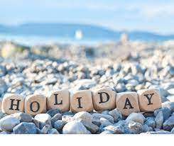

Hello! This is Rakshita R Rajai, a 9th grade student from AmarJyoti Saraswati International School. I grew up in Gujarat in the city of Bhavnagar, and now I want to share the best sites to see for anyone who is planning a visit!
Tourism is travelling for pleasure. It is an act or a process of going away from home in pursuit of relaxation, fun, exploring, sightseeing and learning about various cultures. Being a tourist,you will learn to admire nature, enhance your creativity and make amazing memories!!!
"Holiday" is such a fascinating word, as it represents an escape for all of us from our busy scheduled life. Everyone needs some time to unwind from the tedious lifestyle, and today I'll share my best tips for how you can achieve this in the beatiful state of Gujarat!
